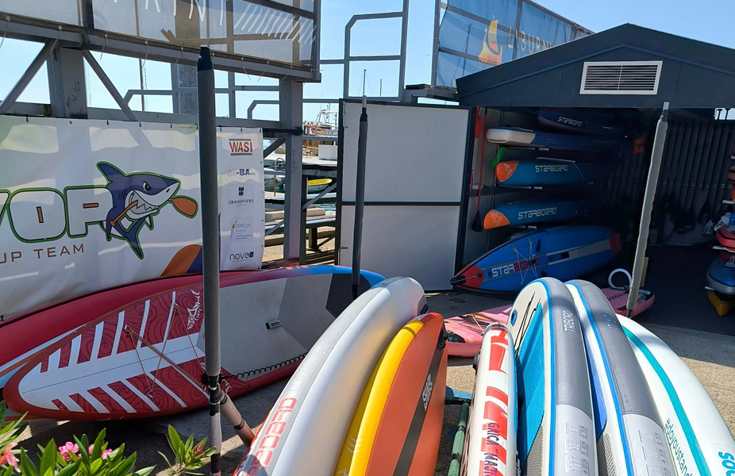

VOP ima klupsku kućicu!
Naš SUP klub konačno ima svoju klupsku kućicu!
Na mjestu gdje se more i zajedništvo spajaju, stvorili smo prostor koji će biti srce kluba – dom opreme, ideja, planova i druženja.
Smještena uz obalu u Voloskom, kućica je puno više od spremišta za daske. Ona je polazna točka svih naših tura, regata i školica, zaklon od vjetra i sunce za kavu nakon veslanja. Bit će tu mjesta za radionice, edukacije, dogovore i spontane razgovore, za djecu, seniore, trenere, članove, prijatelje i sve vas koji volite biti na vodi – i uz nju.
Zahvaljujemo svima koji su pomogli u ovom velikom koraku – od grada i zajednice do vrijednih ruku naših članova.
S veseljem otvaramo vrata novog poglavlja.
Vidimo se na dasci. I ispred kućice.
💙 Vaš VOP
